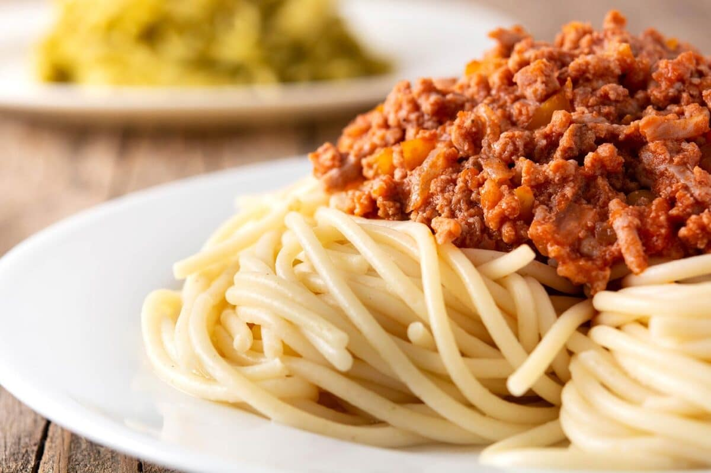

La pasta es uno de los platos más icónicos de la cocina italiana.
Spaghetti son solo uno en una amplia gama de comidas hechas a base de una masa no leudada y cortado en muchos elementos de forma similar.

Ingredientes necesarios
400 gr de espaguetis
2 zanahorias medianas
1 trozo de tallo de apio
1 cebolla mediana
250 gr de carne picada de ternera
500 gr de tomate triturado natural
¼ de vaso de leche
½ vaso de vino blanco
1 cucharada de orégano
Pimienta
Aceite de oliva
Sal
Pasos para la cocción
Preparación de la salsa boloñesa casera
Pelamos y picamos bien pequeño tanto la cebolla como las zanahorias y la ramita de apio. Calentamos un par de cucharadas de aceite de oliva en una sartén grande a fuego medio.
Cuando el aceite coja temperatura, añadiremos la cebolla, la zanahoria y el apio, agregamos una pizca de sal y pochamos esta verdura durante 10 minutos.
Añadimos la carne picada, salpimentamos al gusto y a medida que se vaya haciendo, la iremos trabajando un poco con la ayuda de una paleta de madera para que quede lo más suelta posible.
Cocinamos la carne durante 5 minutos, removiendo de vez en cuando hasta que la carne coja un poquito de color.
Vertemos el tomate triturado, añadimos el orégano y mezclamos bien. Cocinamos durante 5 minutos más.
Incorporamos el vino blanco y la leche, volvemos a mezclar y cocinamos a fuego medio durante 20-25 minutos más, hasta que el tomate se cocine y la salsa quede algo más espesa. Es importante que removamos la salsa de vez en cuando para que no se pegue en el fondo de la sartén.
Cuando falten 10 minutos para concluir el tiempo indicado, continuamos con la pasta, así la salsa estará lista antes de terminar la cocción de los espaguetis.
Cocción de los espaguetis
Ponemos a calentar a fuego medio-alto abundante agua con sal en una olla. Cuando comience a hervir, añadiremos los espaguetis y cocemos durante el tiempo que nos indique en el paquete del fabricante, en mi caso son 8 minutos para dejar la pasta al dente.
Retiramos la olla del fuego y escurrimos los espaguetis con la ayuda de un colador. Emplatamos los espaguetis y regamos por encima con la salsa boloñesa, la cual ya debemos tener recién preparada.